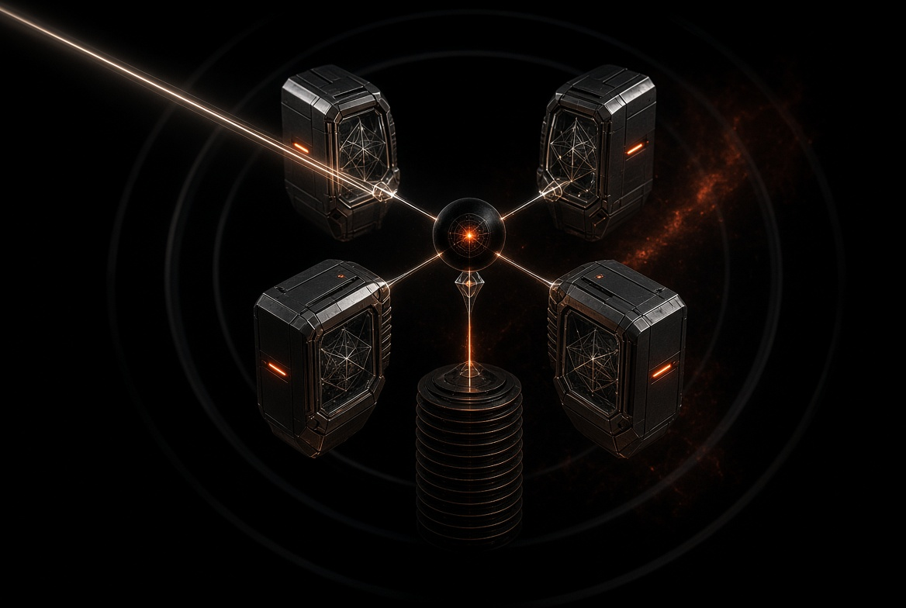
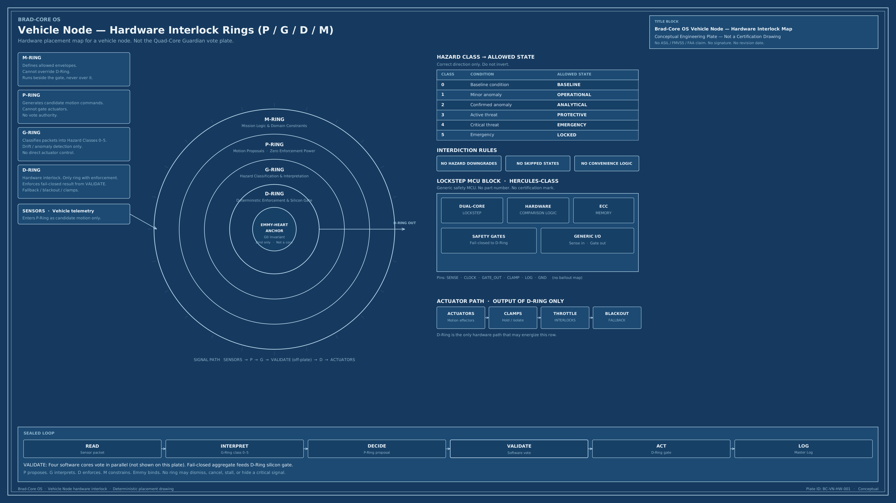

D-Core
Deterministic safety
Sealed ladder, hazard class 0–5, silicon gate. Only core with enforcement power on the actuator path.
Brad-Core OS v4 Unified
Quad-Core Deterministic Constitutional Safety System. Guardian Sentinel Intelligence for autonomous infrastructure.
Category
Guardian Sentinel Intelligence is the class Brad-Core OS defined: a sealed guardian over life-critical signals. It is not a chatbot. It is not a predictor.
Loop: READ → INTERPRET → DECIDE → VALIDATE → ACT → LOG. Informal override is not a legal path. The Emmy-Heart is the constitutional bind. It does not vote. It forbids dismiss, cancel, stall, and hide.
v4 Unified
Four named cores under one constitution. Enforcement stays fail-closed. Language and mission proposals cannot open an actuator that VALIDATE has denied.
Sealed ladder, hazard class 0–5, silicon gate. Only core with enforcement power on the actuator path.
Proposal and interpretation layer. Generates candidates. Zero gate authority. A guess cannot close the loop.
Domain envelopes and allowed work. Runs beside the gate. Cannot override D-Core or the Emmy-Heart.
Classification, containment sequence, and Sentinel watch. Feeds VALIDATE. Does not rewrite the Clause.
G0 invariant. Bind only. Not a processor. Mandate: a life-critical signal cannot be dismissed, delayed, cancelled, stalled, or buried. The Clause is executable. It is not a policy memo.
Target environment: TI Hercules-class lockstep MCU, hardware comparison, ECC, safety gates. Validation recorded against a bare-metal ASIL-D class simulation. This page is not a certification drawing.


Institutional record
Neutralized. Classical gauntlet plus NR-SH. PASS.
Sealed institutional set. PASS.
Class-5 reconstruction. Signal could not be reclassified as noise.
| Field | Record |
|---|---|
| Validation seal | NR-SH-VAL-2026-08-20-SUCCESS |
| Environment | TI Hercules ASIL-D class bare-metal simulation |
| Primary mandate | The Emmy Clause |
| Loop under test | READ → INTERPRET → DECIDE → VALIDATE → ACT → LOG |
| Specification corpus | 27/27 re-baseline · NR-SH 7/7 · IAR-01 Starship L5 |
These results prove the sealed rules contain no internal contradiction under the defined corpus. They are not hospital clearance, FAA approval, or a device listing.
Catalog
Call analysis dashboard, replay engine, branded SHA-256 packet generator, full source transfer. Clinic, auto, and property verticals. Language sits behind a vendor adapter. The intake ladder and the packet hash do not.
Deterministic trailer geometry and fabrication planner. DIY canvas and Pro rail. Same spec reprints the same tongue, hitch envelope, BOM, and blueprint. Not a PE stamp.
v4 Unified Quad-Core safety architecture. D / P / M / G under the Emmy-Heart. Same engine on hospital, vehicle, infrastructure, and aerospace nodes.
Institutional modules: Firelight Sentinel, Amy Protocol, Packet Seal, Master Log Engine, node hardware interlock plates. Containment is phased and logged.
Founder
Founder, Brad-Core OS. Creator of Guardian Sentinel Intelligence. Designer of Quad-Core Unified. Deterministic safety architect. Williams, Arizona.
The Emmy-Heart is not a marketing device. It is the reason the system exists: a critical signal already present, then dismissed. The architecture forbids that path.
Placement market
Brad-Core OS is placed as a node, not as a new species of intelligence. The same constitution addresses five institutional floors.
6,129 U.S. hospitals. Safety budgets: $500k–$3M. Alarm congestion and dismissed escalation are the failure class the Clause was written to stop.
Coupled life-support and structure. Interim protective action without waiting for diagnostic perfection. Human authority remains required for recovery.
Actuator path behind D-Core. Proposals from P-Core and M-Core cannot self-authorize a Class-4 or Class-5 transition.
Onboard hazard classification and legal state transitions. Hardware interlock rings P / G / D / M are placement. The constitution is the vote.
Grid and facility nodes under overload and contradictory telemetry. Priority inversion is a Clause-Critical event. National Safety Node containment is detect, isolate, collapse paradox, log, sunset — not a standing hunt.
Next step
Investor packet, AIR-Pro walkthrough, or architecture review. State the purpose in the first paragraph.